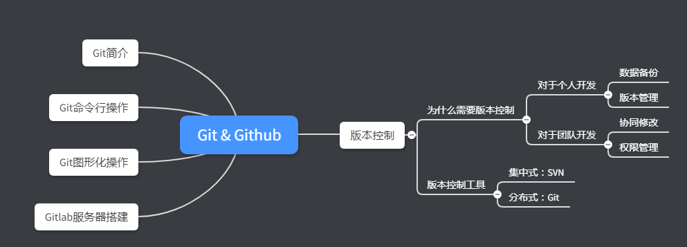

1.Git 版本控制软件Git介绍¶
版本控制有什么用¶
- 提高代码重用性
比如其中的01-bsp_uart_tx文件夹，实现了串口发送的独立功能，当下次项目中需要时，可以直接拷贝过去而无需重写；
- 方便版本回退（重点）
当编写第三个功能03-adc0832+uart+oled的时候，因为思路不清晰导致代码出错，这个时候如果将新添加的代码都找到删除，工作量非常大，而且效率极低，有了版本控制，我们可以直接在02-adc0832+uart的基础上重新编写；
在公板上验证程序无误后，便可以转入硬件开发：设计原理图，绘制PCB，生产焊接调试等工作（电路图也能够版本控制，在后面的文章中介绍）
为什么需要版本控制工具¶
在上一节中我们通过多个文件夹的方式手动实现了版本控制，但是该方式也有一个非常大的缺点：
- 迭代建立文件夹，重复内容多；
- 版本迭代时修改的内容无法查看；
为了解决这一问题，诞生的主流的版本控制软件：
- 集中式版本控制工具：SVN
- 分布式版本控制工具：Git
使用版本控制软件可以解决这一大问题并且带来许多其他的优点，诸如：
- 保存了数据当前状态以及之前每一个提交的历史状态，可以回退到任意一个版本节点；
- 在保存每一个版本的文件信息时不重复保存数据，节约存储空间，提高运行效率；
- 可以清楚到看到不同版本间修改的内容；
- 可以多人协作，团队开发；

本文为摘录：来自
————————————————
版权声明：本文为CSDN博主「Mculover666」的原创文章，遵循 CC 4.0 BY-SA 版权协议，转载请附上原文出处链接及本声明。 原文链接